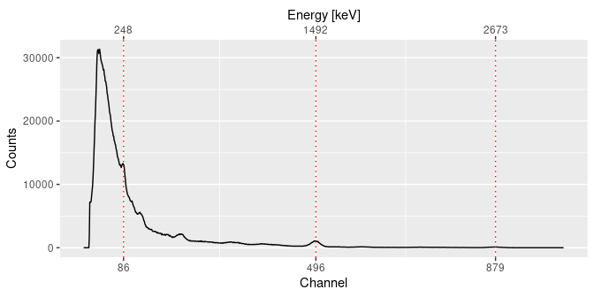
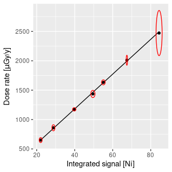

Overview
gamma is intended to process in-situ gamma-ray spectrometry measurements for luminescence dating. This package allows to import, inspect and (automatically) correct the energy scale of the spectrum. It provides methods for estimating the gamma dose rate by the use of a calibration curve. This package only supports Canberra CNF and TKA and Kromek SPE files.
The gammaShiny package provides an enhanced graphical user interface for the main applications of gamma.
To cite gamma in publications use:
Lebrun B, Frerebeau N, Paradol G, Guérin G, Mercier N, Tribolo C,
Lahaye C, Rizza M (2020). "gamma: An R Package for Dose Rate
Estimation from In-Situ Gamma-Ray Spectrometry Measurements."
_Ancient TL_, *38*(2), 1-5. doi:10.26034/la.atl.2020.544
<https://doi.org/10.26034/la.atl.2020.544>.
Frerebeau N, Lebrun B, Paradol G, Kreutzer S (2024). _gamma: Dose
Rate Estimation from in-Situ Gamma-Ray Spectrometry_. Université
Bordeaux Montaigne, Pessac, France. doi:10.5281/zenodo.2652393
<https://doi.org/10.5281/zenodo.2652393>, R package version 1.1.0.Installation
You can install the released version of gamma from CRAN with:
install.packages("gamma")And the development version from GitHub with:
# install.packages("remotes")
remotes::install_github("crp2a/gamma")Usage
## A minimal example
library(gamma)
## Find the full path to the spectrum file
spc_file <- system.file("extdata/LaBr.CNF", package = "gamma")
## Import the spectrum
spectrum <- read(spc_file)
## Set the expected channel/energy peaks for the energy scale calibration
## Spectrum pre-processing and peak detection
peaks <- spectrum |>
signal_slice() |>
signal_stabilize(f = sqrt) |>
signal_smooth(method = "savitzky", m = 21) |>
signal_correct(method = "SNIP", n = 100) |>
peaks_find()
## Set the energy values (in keV)
set_energy(peaks) <- c(238, NA, NA, NA, 1461, NA, NA, 2615)
## Calibrate the energy scale
calib <- energy_calibrate(spectrum, peaks)
## Inspect peaks
plot(calib, peaks)
## Estimate the gamma dose rate of a set of spectra
## You may want to give extra attention to the energy calibration step
spc_file <- system.file("extdata/BDX_LaBr_1/test", package = "gamma")
spectra <- read(spc_file)
## Load the calibration curve for the dose rate estimation
## As this curve is instrument specific, you will have to build your own
data("BDX_LaBr_1", package = "gamma")
plot(BDX_LaBr_1)
## Estimate the gamma dose rate
(doses <- dose_predict(BDX_LaBr_1, spectra))| name | signal_Ni | signal_err_Ni | dose_Ni | dose_err_Ni | signal_NiEi | signal_err_NiEi | dose_NiEi | dose_err_NiEi | dose_final | dose_err_final |
|---|---|---|---|---|---|---|---|---|---|---|
| 20110523204008 | 8.604666 | 0.2691316 | 252.2866 | 10.372500 | 7626.493 | 8.747617 | 220.6747 | 5.495079 | 236.4806 | 11.366900 |
| 20110523210008 | 8.775092 | 0.2166075 | 257.3316 | 9.354274 | 7577.302 | 7.021326 | 219.1303 | 5.454610 | 238.2309 | 10.495729 |
| 20110527205316 | 8.445976 | 0.1546491 | 247.5890 | 8.012680 | 7064.449 | 5.009961 | 203.0288 | 5.052359 | 225.3089 | 9.198048 |
| 20130809172451 | 30.218479 | 0.2549754 | 892.1003 | 24.967288 | 27667.473 | 8.089989 | 849.8817 | 21.142124 | 870.9910 | 32.614162 |
| 20130813181639 | 36.062314 | 0.2853286 | 1065.0899 | 29.644785 | 33243.050 | 9.028097 | 1024.9325 | 25.496544 | 1045.0112 | 39.010062 |
| 20160717175757 | 19.190250 | 0.3635398 | 565.6418 | 18.510895 | 16419.873 | 11.495584 | 496.7518 | 12.361511 | 531.1968 | 21.838611 |
| 20160717181052 | 16.303659 | 0.2837191 | 480.1928 | 15.297869 | 14033.831 | 9.033011 | 421.8396 | 10.496701 | 451.0162 | 18.231817 |
| 20160717182601 | 16.896441 | 0.2557337 | 497.7403 | 15.269850 | 14493.495 | 8.131459 | 436.2712 | 10.854933 | 467.0058 | 18.446627 |
Contributing
Please note that the gamma project is released with a Contributor Code of Conduct. By contributing to this project, you agree to abide by its terms.